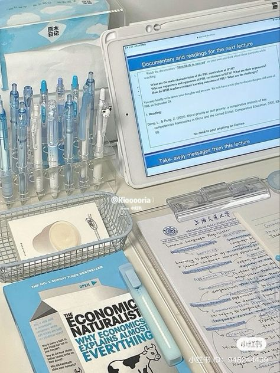
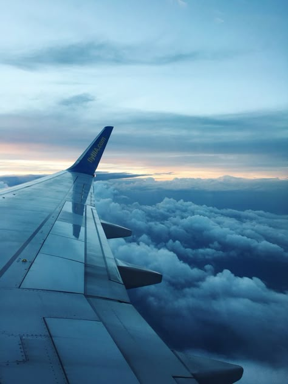
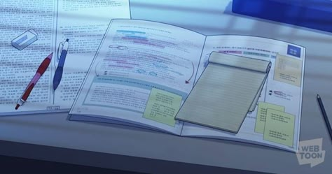

About Marius

Marius is a calm and academic alter, always wanting to study or achieve something. His main role is to help us with our studies, but he also helps us to build headspace!
Marius' Gallery


Hobbies & Interests
Marius enjoys German and studying anything at all! He is highly academic, enjoying the sciences and engineering. He is a very logical-minded alter..
